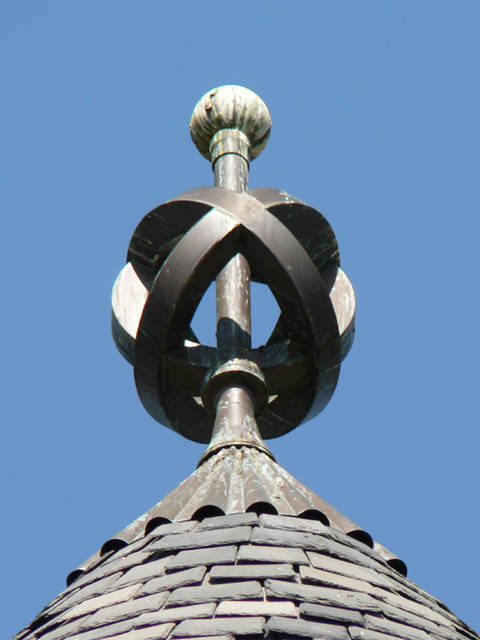
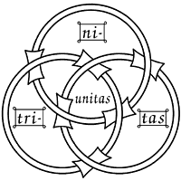

|
 Borromean Rings as a Pinnacle, Montgomery Chapel |
Borromean Pinnacle Montgomery Memorial Chapel |
|  | The Borromean rings as a symbol of the Christian Trinity, based on an illustration in a 13th-century French manuscript found at Chartres, as reproduced in Didron's book Christian Iconography (1843). TRINITAS (trinity) is around the edge, and UNITAS (unity) in the center. Source: Wikipedia |
|
Montgomery Chapel Homepage |
|